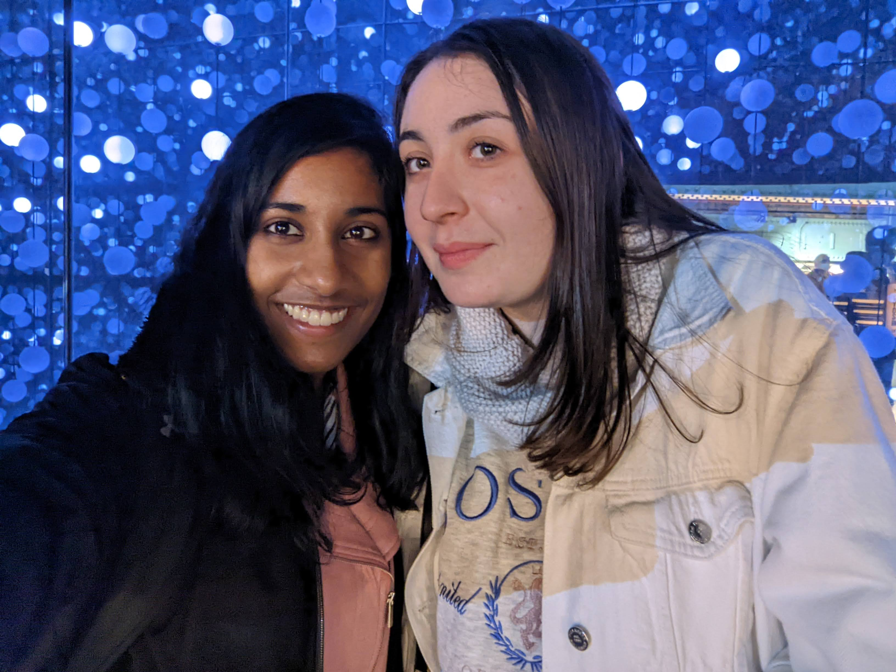
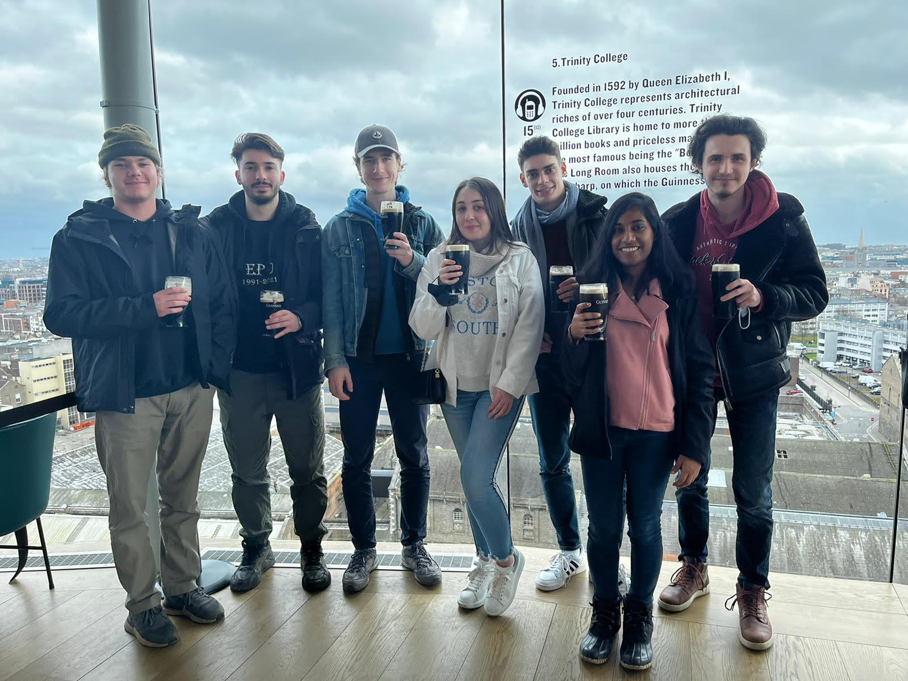
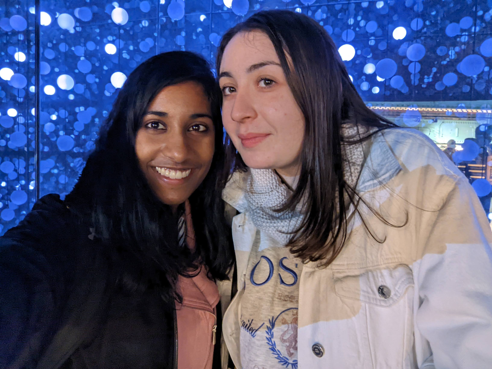
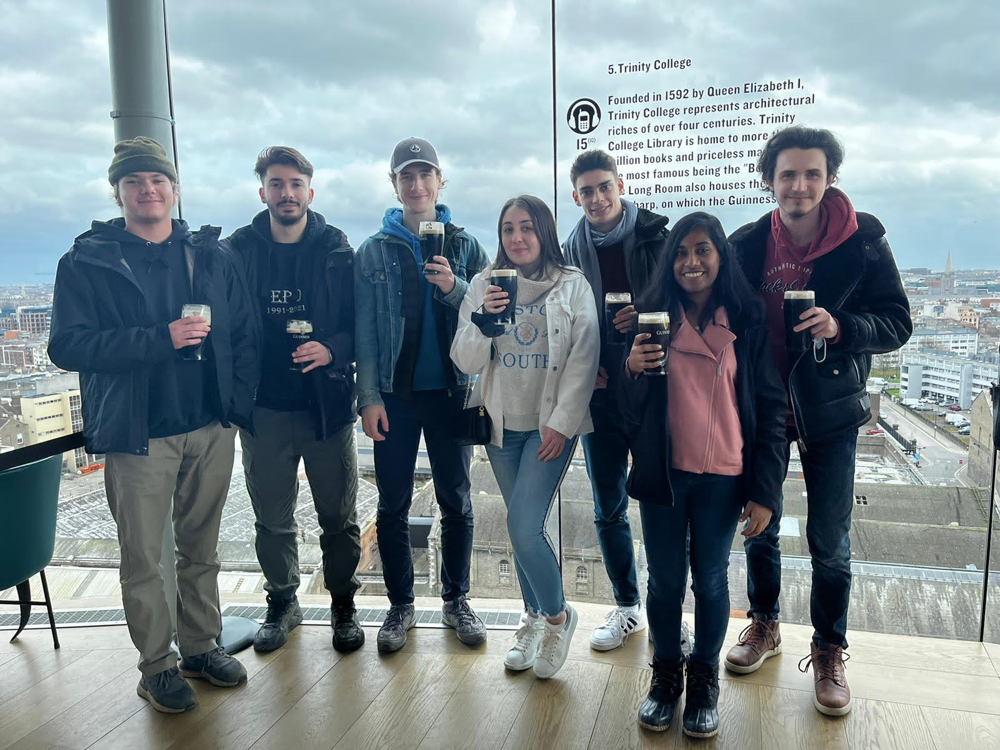

Dublin: The Capital
Ireland's Largest City
My roommates and I took the 8 am bus to Dublin. It took about two hours to get to the city. When we arrived, I was quite surprised because it looked quite small for a capital city. But when we got off, I realized it was quite big. It was definitely bigger than Charleston. Like most major Irish cities, Dublin is built along the river, the River Liffey. There are many bridges crossing the river, which splits the city into two.
On our way through the city center, our bus driver pointed out some famous monuments and statues and explained the history behind them. A lot of the events and people surrounding the Irish struggle against the British were centered in Dublin. On my next trip back, I will be sure to visit some of these historic places.
The bus let us down at the Spire of Dublin, which can be seen from anywhere in the city. From there, we took a city bus to St James Gate, also known as the entrance to the Guinness Storehouse and Museum. Once inside, we got to see how the black stuff is really made. We learned about where and how some of the basic ingredients come from and are used. We also learnt about the history of the company itself from its founding in 1759 by Arthur Guinness to its present-day status as a symbol for Ireland worldwide. We then got to see some cool Guinness advertisements and memorabilia.
Then it was time for some taste-testing! We were led into a room where there were four barrels from which the scents of the four main ingredients of the beer wafted out. After we had had our fill of the smells, we got to sample a small glass of Guinness. Slainté!
Finally, we went up to the Gravity Bar, where we received our free pint of Guinness and got some amazing views of Dublin!
The next stop was the Old Library at Trinity College Dublin. I loved the entrance to the campus, and I was immediately envious of the students that go to school here. Darla Moore and Swearingen back at USC cannot compare to this!
Inside, we saw exhibits explaining the history of the Book of Kells and the process through which it was created. It amazes me how people could make something so grand and intricate without the use of modern technologies. This is especially true of the intricate illustrations on the pages. It must have taken lots of time and patience to pull it off. We got to take a look at a folio and it was so beautiful!
Then we went into the Long Room, the most famous part of the library. It literally was just out of a movie! I spent so much time just taking pictures and admiring the books and shelves. At the end of every shelf stood a bust of a famous author, both from Ireland and from around the world.
There were also photographs of famous Irish photographers and the original document of the Proclamation of the Irish state. In the center, one could see the Brian Boru harp, a harp dating to the 1100s that is the base for the Irish national symbol.
In the gift shop, I purchased two key rings for my parents. They were of figures from the Book of Kells. I just love the colors and I hope my parents will too!
 


